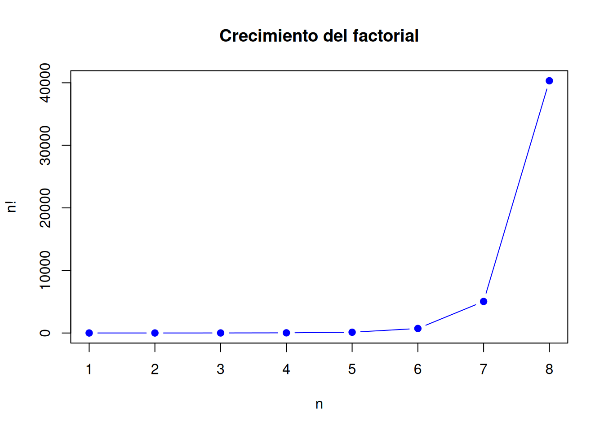

9 Técnicas de conteo
9.1 Motivación ingenieril
En probabilidad, muchas veces el primer paso no es calcular directamente una fórmula, sino contar correctamente cuántos resultados posibles existen y cuántos de ellos son favorables.
En la vida cotidiana aparecen preguntas como:
- ¿Cuántas claves distintas se pueden formar con 4 dígitos?
- ¿Cuántas maneras existen de ordenar 5 libros en una mesa?
- ¿Cuántos equipos de 3 estudiantes se pueden formar con un grupo de 8?
- ¿Cuántas formas existen de elegir 2 representantes de un curso?
- ¿Cuántas combinaciones de ropa se pueden formar con varias prendas?
En ingeniería ocurre lo mismo:
- ¿Cuántas configuraciones de sensores se pueden instalar?
- ¿Cuántas formas existen de seleccionar probetas para ensayo?
- ¿Cuántas rutas posibles puede seguir un vehículo?
- ¿Cuántas combinaciones de paneles solares se pueden evaluar?
- ¿Cuántas secuencias de producción puede adoptar una línea industrial?
Las técnicas de conteo permiten resolver estos problemas sin escribir manualmente todas las posibilidades. Son una base fundamental para calcular probabilidades en experimentos donde el espacio muestral tiene muchos resultados.
9.2 Resultados de aprendizaje
Al finalizar esta unidad, el estudiante será capaz de:
- Aplicar el principio aditivo y el principio multiplicativo.
- Representar espacios muestrales mediante diagramas de árbol.
- Calcular factoriales.
- Resolver problemas de permutaciones.
- Resolver problemas de permutaciones parciales.
- Resolver problemas de permutaciones con repetición.
- Resolver problemas de combinaciones.
- Diferenciar cuándo el orden importa y cuándo no importa.
- Resolver ejercicios manuales paso a paso.
- Verificar los resultados utilizando R.
- Aplicar técnicas de conteo a problemas de ingeniería civil, eléctrica, industrial y energías renovables.
9.3 Introducción conceptual
Recordemos que la probabilidad clásica se calcula como:
\[ P(A)=\frac{n(A)}{n(S)} \]
donde:
- \(n(A)\) es el número de casos favorables.
- \(n(S)\) es el número de casos posibles.
Por tanto, para calcular probabilidades correctamente, primero debemos saber contar.
Si el espacio muestral es pequeño, podemos enumerar todos los casos. Por ejemplo, al lanzar una moneda:
\[ S=\{\text{Cara},\text{Sello}\} \]
Pero cuando el número de posibilidades crece, enumerar todos los resultados se vuelve poco práctico.
Por ejemplo, una clave de 6 dígitos tiene:
\[ 10^6=1\,000\,000 \]
posibilidades. En estos casos necesitamos técnicas de conteo.
9.5 Concepto
El principio aditivo se aplica cuando una actividad puede realizarse de varias formas alternativas y excluyentes entre sí.
Si una opción puede realizarse de \(n_1\) formas y otra de \(n_2\) formas, entonces el número total de posibilidades es:
\[ N=n_1+n_2 \]
De forma general:
\[ N=n_1+n_2+n_3+\cdots+n_k \]
Este principio se usa cuando se debe elegir una opción entre varias categorías.
9.6 Ejemplo resuelto 1: bebidas en una cafetería
9.8 Ejemplo aplicado a ingeniería
Un laboratorio dispone de:
- 5 sensores de temperatura.
- 4 sensores de humedad.
- 3 sensores de presión.
Si para una práctica se utilizará un solo sensor, ¿cuántas opciones hay?
9.9 Verificación en R
sensores_temperatura <- 5
sensores_humedad <- 4
sensores_presion <- 3
total_sensores <- sensores_temperatura + sensores_humedad + sensores_presion
total_sensores## [1] 129.11 Concepto
El principio multiplicativo se aplica cuando una actividad se realiza en varias etapas y cada etapa tiene cierto número de opciones.
Si una primera etapa puede realizarse de \(n_1\) formas, una segunda de \(n_2\) formas, una tercera de \(n_3\) formas, entonces el total de posibilidades es:
\[ N=n_1 \cdot n_2 \cdot n_3 \]
En general:
\[ N=n_1 \cdot n_2 \cdot n_3 \cdots n_k \]
9.12 Ejemplo resuelto 2: combinación de ropa
9.12.1 Problema
Una persona tiene:
- 3 camisas.
- 2 pantalones.
- 2 pares de zapatos.
¿Cuántos conjuntos diferentes puede formar?
9.13 Verificación en R
camisas <- c("C1", "C2", "C3")
pantalones <- c("P1", "P2")
zapatos <- c("Z1", "Z2")
conjuntos <- expand.grid(Camisa = camisas,
Pantalon = pantalones,
Zapatos = zapatos)
conjuntos## Camisa Pantalon Zapatos
## 1 C1 P1 Z1
## 2 C2 P1 Z1
## 3 C3 P1 Z1
## 4 C1 P2 Z1
## 5 C2 P2 Z1
## 6 C3 P2 Z1
## 7 C1 P1 Z2
## 8 C2 P1 Z2
## 9 C3 P1 Z2
## 10 C1 P2 Z2
## 11 C2 P2 Z2
## 12 C3 P2 Z2## [1] 129.14 Ejemplo resuelto 3: código numérico
9.14.1 Problema
Un sistema de acceso utiliza claves de 4 dígitos. Cada dígito puede tomar valores del 0 al 9. ¿Cuántas claves distintas pueden formarse si se permite repetir dígitos?
9.15 Verificación en R
digitos <- 0:9
claves <- expand.grid(d1 = digitos,
d2 = digitos,
d3 = digitos,
d4 = digitos)
nrow(claves)## [1] 100009.17 Concepto
Un diagrama de árbol permite representar de forma gráfica las etapas de un experimento y todos sus resultados posibles.
Es útil cuando el número de etapas es pequeño y se desea visualizar el espacio muestral.
9.19 Verificación en R
moneda <- c("Cara", "Sello")
espacio_moneda <- expand.grid(Lanzamiento_1 = moneda,
Lanzamiento_2 = moneda)
espacio_moneda## Lanzamiento_1 Lanzamiento_2
## 1 Cara Cara
## 2 Sello Cara
## 3 Cara Sello
## 4 Sello Sello## [1] 49.21 Concepto
El factorial de un número natural \(n\) se representa como:
\[ n! \]
y se define como:
\[ n!=n(n-1)(n-2)\cdots 3\cdot2\cdot1 \]
Por convenio:
\[ 0!=1 \]
9.24 Gráfica del crecimiento factorial
El factorial crece rápidamente a medida que aumenta \(n\).
n <- 1:8
fact <- factorial(n)
plot(n, fact,
type = "b",
pch = 19,
col = "blue",
main = "Crecimiento del factorial",
xlab = "n",
ylab = "n!")
9.26 Concepto
Una permutación es un ordenamiento de elementos.
Se utiliza cuando:
- Se usan todos los elementos.
- El orden sí importa.
Si se tienen \(n\) elementos distintos, el número de formas de ordenarlos es:
\[ P(n)=n! \]
9.27 Ejemplo resuelto 5: ordenar libros
9.29 Ejemplo aplicado a ingeniería industrial
Una línea de producción tiene 5 operaciones que pueden ordenarse de distintas formas para evaluar tiempos de proceso. ¿Cuántas secuencias posibles existen?
\[ P(5)=5! \]
\[ P(5)=120 \]
9.32 Concepto
A veces no se ordenan todos los elementos, sino solo una parte.
Si se seleccionan y ordenan \(r\) elementos de un total de \(n\), el número de permutaciones parciales es:
\[ P(n,r)=\frac{n!}{(n-r)!} \]
Se utiliza cuando:
- Se selecciona una parte del total.
- El orden sí importa.
- No hay repetición.
9.33 Ejemplo resuelto 6: orden de exposición
9.33.1 Problema
En un grupo hay 5 estudiantes. Se desea elegir 3 para exponer en primer, segundo y tercer lugar. ¿De cuántas formas se puede organizar el orden?
9.33.2 Paso 1: identificar si el orden importa
Sí importa. No es lo mismo:
\[ (Ana, Luis, Pedro) \]
que:
\[ (Pedro, Ana, Luis) \]
9.35 Ejemplo aplicado a ingeniería eléctrica
Un técnico dispone de 6 sensores y debe instalar 3 en posiciones específicas: entrada, salida y zona crítica. ¿De cuántas formas puede hacerlo?
\[ P(6,3)=\frac{6!}{(6-3)!} \]
\[ P(6,3)=\frac{720}{6}=120 \]
9.38 Concepto
Cuando hay elementos repetidos, el número de permutaciones se reduce porque intercambiar elementos iguales no produce un orden nuevo.
Si hay \(n\) elementos en total, con repeticiones \(n_1,n_2,\ldots,n_k\), entonces:
\[ P=\frac{n!}{n_1!n_2!\cdots n_k!} \]
9.39 Ejemplo resuelto 7: palabra con letras repetidas
9.42 Concepto
Una combinación es una selección de elementos donde el orden no importa.
Se usa cuando:
- Se selecciona una parte del total.
- El orden no importa.
- No hay repetición.
La fórmula es:
\[ C(n,r)=\binom{n}{r}=\frac{n!}{r!(n-r)!} \]
9.43 Ejemplo resuelto 8: seleccionar estudiantes
9.43.1 Problema
De un grupo de 6 estudiantes se desea seleccionar 3 para formar un equipo. ¿Cuántos equipos distintos pueden formarse?
9.43.2 Paso 1: identificar si el orden importa
No importa. El equipo formado por Ana, Luis y Pedro es el mismo que Luis, Pedro y Ana.
Por tanto, se usa combinación.
9.45 Listar combinaciones en R
## [,1] [,2] [,3] [,4] [,5] [,6] [,7] [,8] [,9] [,10] [,11] [,12] [,13] [,14]
## [1,] "E1" "E1" "E1" "E1" "E1" "E1" "E1" "E1" "E1" "E1" "E2" "E2" "E2" "E2"
## [2,] "E2" "E2" "E2" "E2" "E3" "E3" "E3" "E4" "E4" "E5" "E3" "E3" "E3" "E4"
## [3,] "E3" "E4" "E5" "E6" "E4" "E5" "E6" "E5" "E6" "E6" "E4" "E5" "E6" "E5"
## [,15] [,16] [,17] [,18] [,19] [,20]
## [1,] "E2" "E2" "E3" "E3" "E3" "E4"
## [2,] "E4" "E5" "E4" "E4" "E5" "E5"
## [3,] "E6" "E6" "E5" "E6" "E6" "E6"## [1] 209.46 Ejemplo aplicado a ingeniería civil
En una obra se tienen 8 probetas de hormigón y se desea seleccionar 3 para ensayo. ¿Cuántas selecciones posibles existen?
\[ C(8,3)=\frac{8!}{3!(8-3)!} \]
\[ C(8,3)=\frac{8!}{3!5!} \]
\[ C(8,3)=56 \]
9.48 Diferencia entre permutación y combinación
| Situación | ¿Importa el orden? | Técnica |
|---|---|---|
| Ordenar libros | Sí | Permutación |
| Elegir representantes | No | Combinación |
| Asignar cargos | Sí | Permutación parcial |
| Formar equipos | No | Combinación |
| Crear claves | Sí | Principio multiplicativo |
| Seleccionar probetas | No | Combinación |
| Instalar sensores en posiciones específicas | Sí | Permutación parcial |
9.49 Ejercicio guiado
En un laboratorio de energías renovables hay 7 paneles solares disponibles.
Se desea:
- Seleccionar 3 paneles para una prueba sin importar el orden.
- Asignar 3 paneles a posiciones específicas: norte, centro y sur.
Calcular ambas cantidades.
9.50 Solución del ejercicio guiado
9.50.1 Caso 1: seleccionar 3 paneles
Como el orden no importa, se usa combinación:
\[ C(7,3)=\frac{7!}{3!(7-3)!} \]
\[ C(7,3)=\frac{7!}{3!4!} \]
\[ C(7,3)=35 \]
9.52 Simulación en R
## [,1] [,2] [,3] [,4] [,5]
## [1,] "P1" "P1" "P1" "P1" "P1"
## [2,] "P2" "P2" "P2" "P2" "P2"
## [3,] "P3" "P4" "P5" "P6" "P7"## [1] 35Para asignaciones con orden usamos expand.grid() y eliminamos repeticiones.
asignaciones <- expand.grid(Norte = paneles,
Centro = paneles,
Sur = paneles)
asignaciones <- asignaciones[
asignaciones$Norte != asignaciones$Centro &
asignaciones$Norte != asignaciones$Sur &
asignaciones$Centro != asignaciones$Sur, ]
head(asignaciones)## Norte Centro Sur
## 10 P3 P2 P1
## 11 P4 P2 P1
## 12 P5 P2 P1
## 13 P6 P2 P1
## 14 P7 P2 P1
## 16 P2 P3 P1## [1] 2109.53 Actividad práctica
Resuelva manualmente y verifique en R:
- ¿Cuántas formas hay de ordenar 5 máquinas en una línea de producción?
- ¿Cuántas formas hay de seleccionar 2 sensores de un conjunto de 9?
- ¿Cuántas claves de 3 letras se pueden formar usando 26 letras si se permite repetición?
- ¿Cuántos equipos de 4 estudiantes pueden formarse con 10 estudiantes?
- ¿Cuántas formas hay de asignar presidente, secretario y vocal en un grupo de 8 personas?
- ¿Cuántas formas hay de seleccionar 3 probetas de 12 disponibles?
- ¿Cuántas formas hay de ubicar 4 paneles solares diferentes en 4 posiciones?
9.54 Aplicaciones por carrera
9.54.1 Ingeniería Civil
Las combinaciones se usan para seleccionar muestras de suelo, probetas de hormigón, tramos de vía o sectores de inspección.
9.54.2 Ingeniería Eléctrica
Las técnicas de conteo permiten estudiar configuraciones de sensores, protecciones, circuitos y combinaciones de cargas.
9.55 Preguntas de autoevaluación
- ¿Qué es el principio aditivo?
- ¿Qué es el principio multiplicativo?
- ¿Qué representa \(n!\)?
- ¿Cuándo se usa una permutación?
- ¿Cuándo se usa una combinación?
- ¿Qué diferencia hay entre seleccionar y ordenar?
- ¿Por qué \(C(6,3)\) no es igual a \(P(6,3)\)?
- ¿Qué función de R calcula factoriales?
- ¿Qué función de R calcula combinaciones?
- ¿Qué función de R permite listar combinaciones?
- Mencione un ejemplo de combinación en ingeniería civil.
- Mencione un ejemplo de permutación en ingeniería eléctrica.
- ¿Por qué las técnicas de conteo son importantes para la probabilidad?
9.56 Resumen de la unidad
Las técnicas de conteo permiten calcular el número de posibles resultados de un experimento sin enumerarlos manualmente. El principio aditivo se usa cuando se elige entre alternativas excluyentes. El principio multiplicativo se usa cuando un proceso tiene varias etapas. El factorial permite calcular ordenamientos. Las permutaciones se usan cuando el orden importa, mientras que las combinaciones se usan cuando el orden no importa.
Estas herramientas son esenciales para construir espacios muestrales, calcular probabilidades y resolver problemas aplicados en ingeniería.